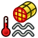

Bancada FEM proporciona um moderno entorno para o Analise de Elementos finitos (AEF) para FreeCAD. Principalmente isto significa, que todas as ferramentas para realizar o Analise de Elementos Finitos estão arrumadas no mesmo entorno gráfico (GUI).

Os passos para fazer um FEA na bancada de trabalho "FEM Workbench" são:
- Pré-processamento
- A modelagem da geometria, na qual FreeCAD já é um software consolidado.
- Criar uma Análise:
- Criar uma malha FEM fora do modelo geométrico.
- Adicionar restrições tais como cargas e fixar os apoios para o modelo de análise.
- Adicionar um material para o modelo de análise
- Solucionar
- Resolver o sistema de equações de dentro do FreeCAD GUI.
- Pós-processamento
- Ver os resultados dentro FreeCAD GUI.
The above mainly describes how a FEA analysis is done inside FreeCAD FEM Workbench. For further documentation refer to the GUI Tools described later here.
As of FreeCAD version 0.15 the FEM-Module can be used on Windows, Mac OSX and Linux platforms. Since FEM Workbench makes use of external software, the amount of manual intervention until the FEM workbench is ready to use will depend on the OS that you are using. Check out FEM Install.
Tools
- Menu Model:
-
 Analysis container: Creates a new container for a mechanical analysis. If a solid is selected in the tree view before clicking on it, the meshing dialog will be opened next.
Analysis container: Creates a new container for a mechanical analysis. If a solid is selected in the tree view before clicking on it, the meshing dialog will be opened next. -
 FEM material for solid: Lets you select a material from the database.
FEM material for solid: Lets you select a material from the database. -
 FEM material for fluid: Lets you select a material from the database.
FEM material for fluid: Lets you select a material from the database. -
 Nonlinear mechanical material: Lets you select a material from the database.
Nonlinear mechanical material: Lets you select a material from the database. -
 Beam cross section:
Beam cross section: -
 Beam rotation:
Beam rotation: -
 Shell plate thickness:
Shell plate thickness: -
 Fluid section for 1D flow:
Fluid section for 1D flow: - Mechanical constraints:
-
 Constraint fixed: Used to define a fixed constraint on point/edge/face(s).
Constraint fixed: Used to define a fixed constraint on point/edge/face(s). -
 Constraint displacement: Used to define a displacement constraint on point/edge/face(s).
Constraint displacement: Used to define a displacement constraint on point/edge/face(s). -
 Constraint plane rotation: Used to define a plane rotation constraint on a planar face.
Constraint plane rotation: Used to define a plane rotation constraint on a planar face. -
 Constraint contact: Used to define a contact constraint between two faces.
Constraint contact: Used to define a contact constraint between two faces. -
 Constraint transform:
Constraint transform: - Constraint force: Used to define a force in [N] applied uniformly to a selectable face in a definable direction.
-
 Constraint pressure: Used to define a pressure constraint.
Constraint pressure: Used to define a pressure constraint. -
 Constraint self weight: Used to define a gravity acceleration acting on a model.
Constraint self weight: Used to define a gravity acceleration acting on a model. -
 Constraint bearing: Used to define a bearing constraint.
Constraint bearing: Used to define a bearing constraint. -
 Constraint gear: Used to define a gear constraint.
Constraint gear: Used to define a gear constraint. -
 Constraint pulley: Used to define a pulley constraint.
Constraint pulley: Used to define a pulley constraint.
-
- Thermal constraints:
-
 Constraint initial temperature: Used to define the initial temperature of a body.
Constraint initial temperature: Used to define the initial temperature of a body. -  Constraint heatflux: Used to define a heat flux constraint on a face(s).
-
 Constraint temperature: Used to define a temperature constraint on a point/edge/face(s).
Constraint temperature: Used to define a temperature constraint on a point/edge/face(s). - Constraint body heat source:
-
- Fluid constraints:
-
{kind=link}
{kind=link}
{kind=link}
- Menu Mesh:
-
 FEM mesh from shape by Netgen:
FEM mesh from shape by Netgen: -
 FEM mesh from shape by GMSH:
FEM mesh from shape by GMSH: -
 FEM mesh boundary layer:
FEM mesh boundary layer: -
 FEM mesh region:
FEM mesh region: -
 FEM mesh group:
FEM mesh group: -
 Nodes set: Creates/defines a node set from FEM mesh.
Nodes set: Creates/defines a node set from FEM mesh. -
 FEM mesh to mesh: Convert the surface of a FEM mesh to a mesh.
FEM mesh to mesh: Convert the surface of a FEM mesh to a mesh.
-
- Menu Solve:
-
 Solver Calculix CCX tools: Creates a new solver for this analysis. In most cases the solver is created together with the analysis.
Solver Calculix CCX tools: Creates a new solver for this analysis. In most cases the solver is created together with the analysis. - Solver CalculiX:
-
 Solver Elmer:
Solver Elmer: - Solver Z88:
-
 Equation heat:
Equation heat: -
 Equation elasticity:
Equation elasticity: -
 Equation electrostatic:
Equation electrostatic: - Equation fluxsolver:
-
 Equation flow:
Equation flow: -
 Solver job control: Opens the menu to adjust and start the selected solver.
Solver job control: Opens the menu to adjust and start the selected solver. -
 Solver run calculation: Runs the selected solver of the active analysis.
Solver run calculation: Runs the selected solver of the active analysis.
-
{kind=link}
- Menu Results:
-
 Results purge: Deletes the results of the active analysis.
Results purge: Deletes the results of the active analysis. -
 Result show: Used to display the result of an analysis.
Result show: Used to display the result of an analysis. - icon
 Post Apply changes:
Post Apply changes: -
 Post Pipeline from result:
Post Pipeline from result: -
 Post Create clip filter:
Post Create clip filter: -
 Post Create scalar clip filter:
Post Create scalar clip filter: -
 Post Create cut filter:
Post Create cut filter: -
 Post Create warp vector filter:
Post Create warp vector filter: - Post Create data along line filter:
-
 Post Create linearized stresses:
Post Create linearized stresses: - icon [[Image:|32px]] Post Create data at point filter:
-
 Post Create functions:
Post Create functions:
-
{kind=link}
- Context Menu:
- Preferences Menu
- Preferences...: Preferences disposable in FEM Tools.
{kind=link}
Tutorials
Tutorial 1 FEM CalculiX Cantilever 3D
Tutorial 2 FEM Tutorial
Tutorial 3 FEM Tutorial Python
Tutorial 4 FEM Shear of a Composite Block
Coupled thermal mechanical analysis tutorials PDF's
Video Tutorial 1 Forum post with you tube link
Video Tutorial 2 Forum post with you tube link
Further video Tutorials Forum post with you tube link
Links
FEM Install for a detailed description how to set up a working FEM Module.
FEM Mesh for further Information about the FEM Mesh in FreeCAD
FEM CalculiX for further Information about the interface between FEM Module and the current Solver CalculiX
FEM Project for more detailed informations about the Units, Limitations and the Development of FEM Module.